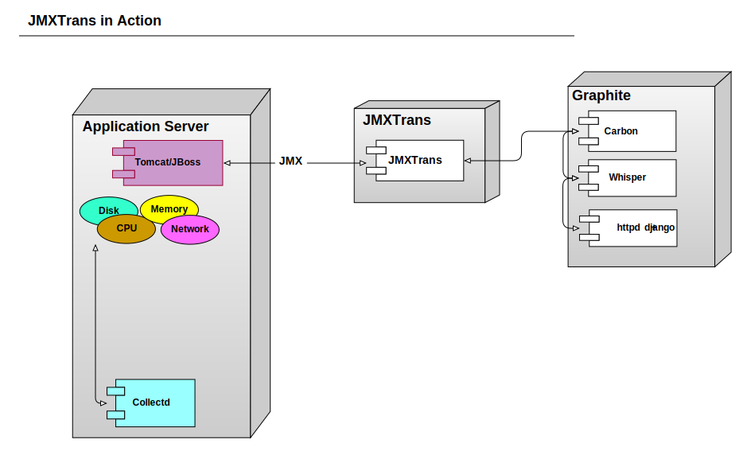
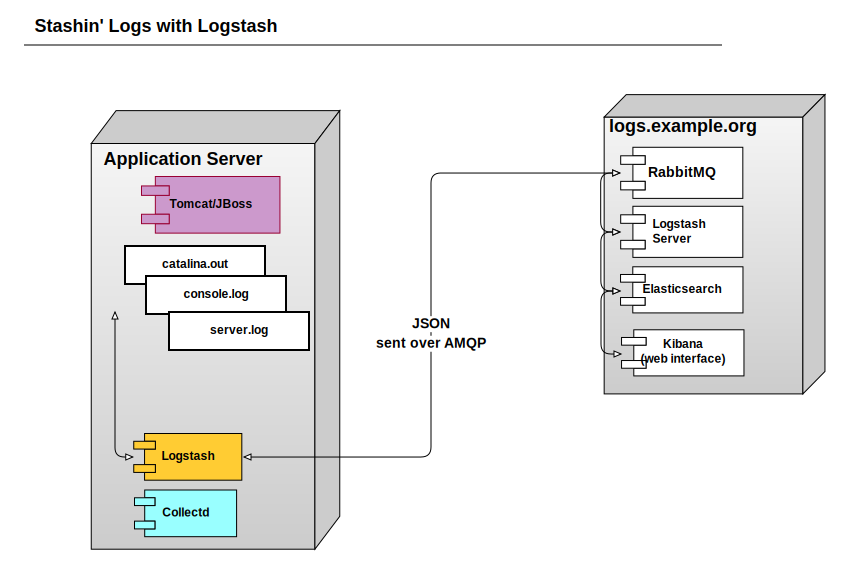
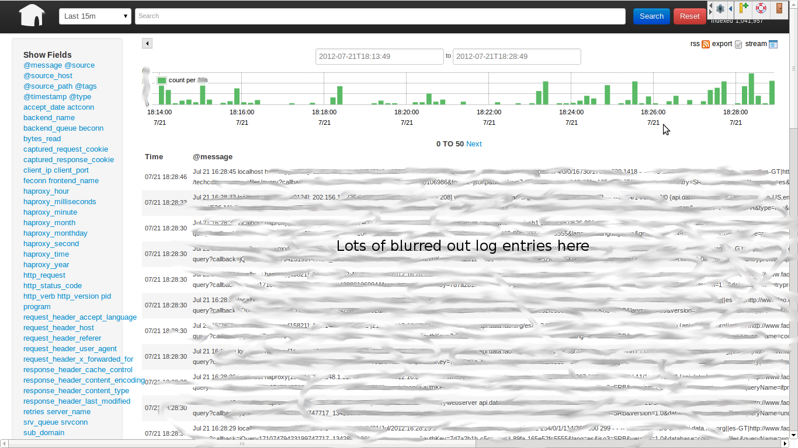
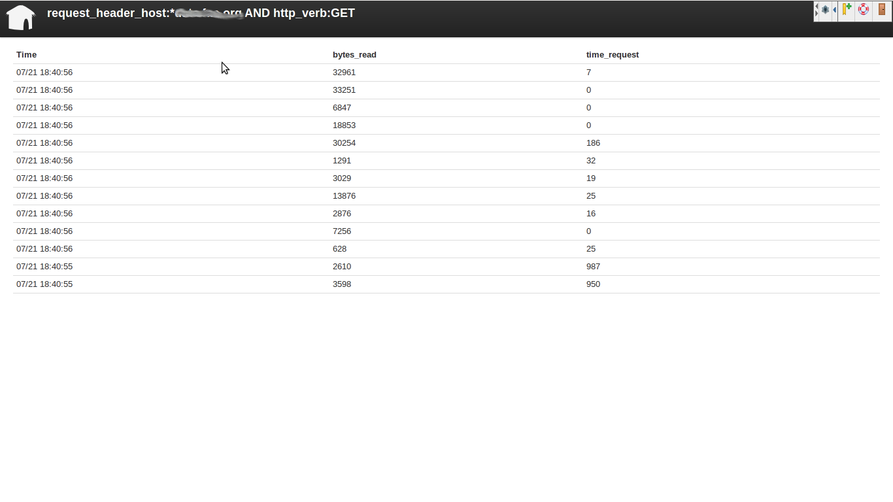
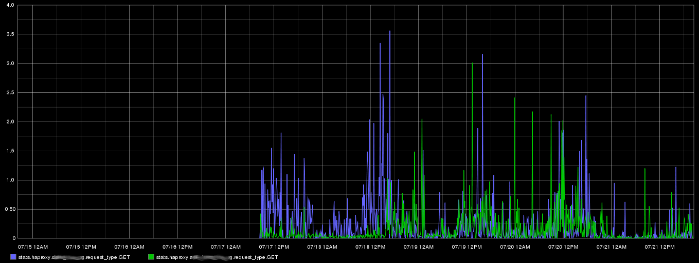
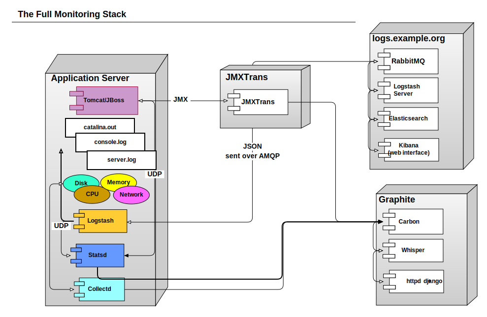

A New Hope
data.fao.org
http://www.ironicsans.com/images/anewhope.png
| z, ? | toggle help (this) |
| space, → | next slide |
| shift-space, ← | previous slide |
| d | toggle debug mode |
| ## <ret> | go to slide # |
| c, t | table of contents (vi) |
| f | toggle footer |
| r | reload slides |
| n | toggle notes |
| p | run preshow |
http://www.ironicsans.com/images/anewhope.png
I am Bryan W. Berry
You can reach me at bryan.berry@fao.org

http://dummyatcooking.files.wordpress.com/2007/10/spaghetti-bolognese.jpg
http://3.bp.blogspot.com/-RAPTS9vZKKw/TZB8Zf7HSpI/AAAAAAAAEmA/5uSAjc4xfsc/s1600/the-scream.jpg




Win
Con - The agent is not light on resource usage




http://www.alexandgregory.com/images/luke%20skywalker.jpg


 Coda Hale gave an excellent talk about how his team at yammer
uses metrics
Coda Hale gave an excellent talk about how his team at yammer
uses metrics
He also created an excellent java library that you can use together with statsd

show how to display requestduration across multiple subdomains
